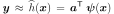
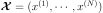
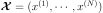
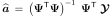
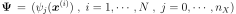
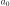

LinearLeastSquares¶
-
class
LinearLeastSquares(*args)¶ First order polynomial response surface by least squares.
- Available constructors:
LinearLeastSquares(dataIn, function)
LinearLeastSquares(dataIn, dataOut)
Parameters: dataIn : 2-d sequence of float
Input data.
function :
FunctionFunction
 to be approximated.
to be approximated.dataOut : 2-d sequence of float
Output data. If not specified, this sample is computed such as: .
See also
Notes
Instead of replacing the model response
 for a local
approximation around a given set of input parameters as in
Taylor approximations, one may seek a global approximation of
over its whole domain of definition. A common choice to
this end is global polynomial approximation.
for a local
approximation around a given set of input parameters as in
Taylor approximations, one may seek a global approximation of
over its whole domain of definition. A common choice to
this end is global polynomial approximation.We consider here a global approximation of the model response using a linear function:
where is a set of unknown coefficients and the family
 gathers the constant monomial
gathers the constant monomial
 and the monomials of degree one
and the monomials of degree one  . Using the vector
notation and
,
this rewrites:
. Using the vector
notation and
,
this rewrites:
A global approximation of the model response over its whole definition domain is sought. To this end, the coefficients
 may be computed using a
least squares regression approach. In this context, an experimental design
, i.e. a set of realizations of
input parameters is required, as well as the corresponding model evaluations
may be computed using a
least squares regression approach. In this context, an experimental design
, i.e. a set of realizations of
input parameters is required, as well as the corresponding model evaluations
 .
.The following minimization problem has to be solved:
The solution is given by:

where:

Examples
>>> import openturns as ot >>> formulas = ['cos(x1 + x2)', '(x2 + 1) * exp(x1 - 2 * x2)'] >>> myFunc = ot.SymbolicFunction(['x1', 'x2'], formulas) >>> data = [[0.5,0.5], [-0.5,-0.5], [-0.5,0.5], [0.5,-0.5]] >>> data += [[0.25,0.25], [-0.25,-0.25], [-0.25,0.25], [0.25,-0.25]] >>> myLeastSquares = ot.LinearLeastSquares(data, myFunc) >>> myLeastSquares.run() >>> responseSurface = myLeastSquares.getResponseSurface() >>> print(responseSurface([0.1,0.1])) [0.854471,1.06031]
Methods
getClassName()Accessor to the object’s name. getConstant()Get the constant vector of the approximation. getDataIn()Get the input data. getDataOut()Get the output data. getId()Accessor to the object’s id. getInputFunction()Get the function. getLinear()Get the linear matrix of the approximation. getName()Accessor to the object’s name. getResponseSurface()Get an approximation of the function. getShadowedId()Accessor to the object’s shadowed id. getVisibility()Accessor to the object’s visibility state. hasName()Test if the object is named. hasVisibleName()Test if the object has a distinguishable name. run()Perform the least squares approximation. setDataOut(dataOut)Set the output data. setName(name)Accessor to the object’s name. setShadowedId(id)Accessor to the object’s shadowed id. setVisibility(visible)Accessor to the object’s visibility state. -
__init__(*args)¶ x.__init__(…) initializes x; see help(type(x)) for signature
-
getClassName()¶ Accessor to the object’s name.
Returns: class_name : str
The object class name (object.__class__.__name__).
-
getConstant()¶ Get the constant vector of the approximation.
Returns: constantVector :
PointConstant vector of the approximation, equal to .
-
getDataOut()¶ Get the output data.
Returns: dataOut :
SampleOutput data. If not specified in the constructor, the sample is computed such as: .
-
getId()¶ Accessor to the object’s id.
Returns: id : int
Internal unique identifier.
-
getLinear()¶ Get the linear matrix of the approximation.
Returns: linearMatrix :
MatrixLinear matrix of the approximation of the function
.
-
getName()¶ Accessor to the object’s name.
Returns: name : str
The name of the object.
-
getResponseSurface()¶ Get an approximation of the function.
Returns: approximation :
FunctionAn approximation of the function
by Linear Least Squares.
-
getShadowedId()¶ Accessor to the object’s shadowed id.
Returns: id : int
Internal unique identifier.
-
getVisibility()¶ Accessor to the object’s visibility state.
Returns: visible : bool
Visibility flag.
-
hasName()¶ Test if the object is named.
Returns: hasName : bool
True if the name is not empty.
-
hasVisibleName()¶ Test if the object has a distinguishable name.
Returns: hasVisibleName : bool
True if the name is not empty and not the default one.
-
run()¶ Perform the least squares approximation.
-
setDataOut(dataOut)¶ Set the output data.
Parameters: dataOut : 2-d sequence of float
Output data.
-
setName(name)¶ Accessor to the object’s name.
Parameters: name : str
The name of the object.
-
setShadowedId(id)¶ Accessor to the object’s shadowed id.
Parameters: id : int
Internal unique identifier.
-
setVisibility(visible)¶ Accessor to the object’s visibility state.
Parameters: visible : bool
Visibility flag.